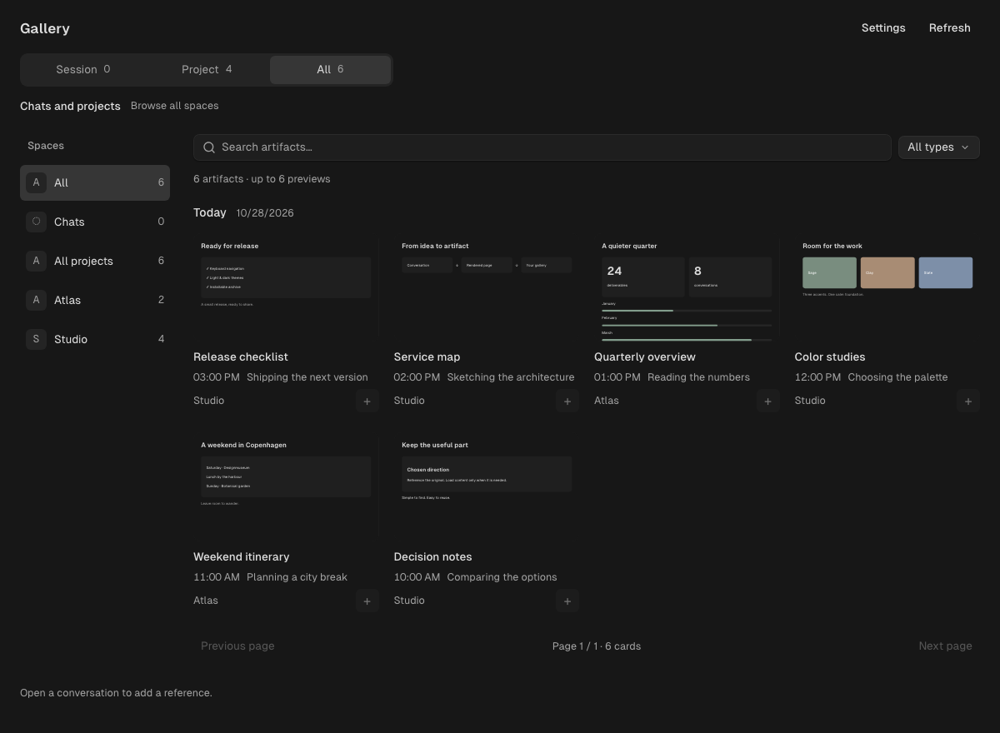

Start close. Explore further.
Session, Project or Chats, then All. The scope follows your context, while the explorer brings the rest of your work within reach.
Your OpenChamber conversations make pages, images and useful deliverables. Give them a place you can come back to.
Free & open source · MIT. A ready-to-install folder for your local OpenChamber.

Browse without losing your place. A source can come from any space; your draft stays with the conversation you are working in.
Session, Project or Chats, then All. The scope follows your context, while the explorer brings the rest of your work within reach.
Open the preview, check the date and source message, then add a provenance reference to your draft. Nothing sends automatically.
Keep using render.page, screenshots and file links. The gallery recognizes the useful outputs. No extra publication step or model call.
The index keeps provenance. Original content is read when needed, and stays out of agent context until you ask for it.
Six active thumbnails. Two concurrent source reads. Pages replace one another, and offscreen previews unload.
Synthetic Chromium comparison: 1,000 references, ten pages of 24, 1440 × 900. Loading bounds are not a total RAM or CPU limit.
Colors, received font stacks and radii follow the host, with native default text sizes and bundled Geist Sans. SDK 2.5.2 does not expose custom interface scale or padding. Font-only changes may need a reopen, and nonbundled web fonts can fall back to an installed font.
The private metadata index and the original sources. The local service runs with your user account’s access and reads session history and referenced files. HTML previews are network-blocked and isolated. The gallery is not a backup: deleted sources may become unavailable.
Local OpenChamber 2.5.2+ with an OpenCode service compatible with client 2.2.0. Verified on macOS and Chromium; CI checks run on Linux. Narrow screenshots demonstrate responsive layout, not native mobile or VS Code host support. This is an independent extension, not an official registry listing.
The release contains the compiled panel and service. No dependency install, build tool or terminal required.
Get the latest release